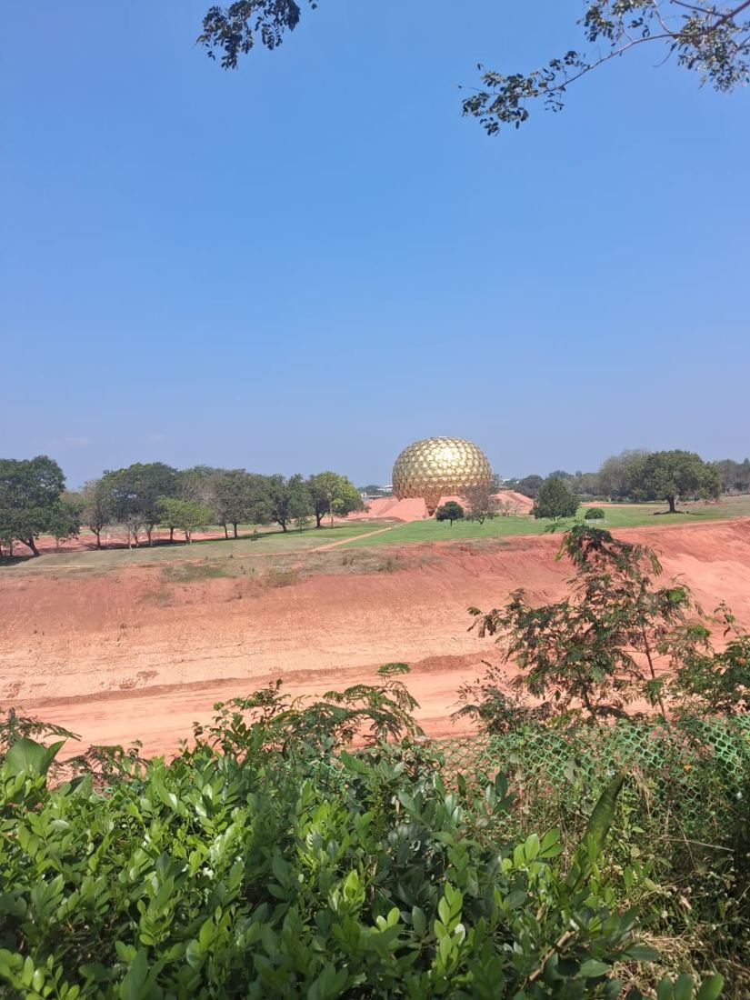

packing the postcards
greetings from the French quarter ~
Pastries for breakfast, a golden globe in the red dirt, and a whole gang waving at the Bay of Bengal.
11.93° N, 79.83° E · Puducherry

chapter 0
One bus, one window seat, and the playlist already on repeat. Tap the clip for sound.
we came for the sea, stayed for the croissants
pink walls, yellow walls, bougainvillea everywhere
red dirt, quiet trees, big thoughts
one lighthouse, eleven people, zero chill
ruins, selfies, mirror fits, bunk beds